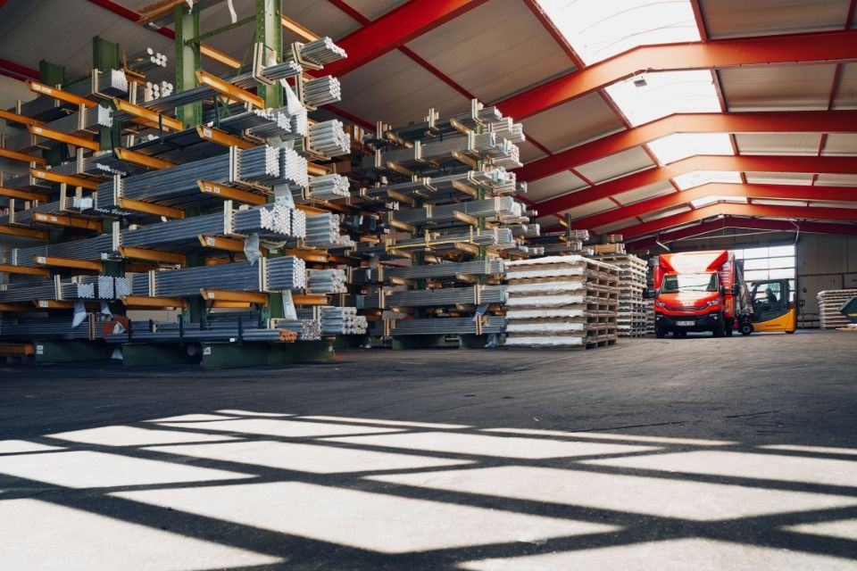
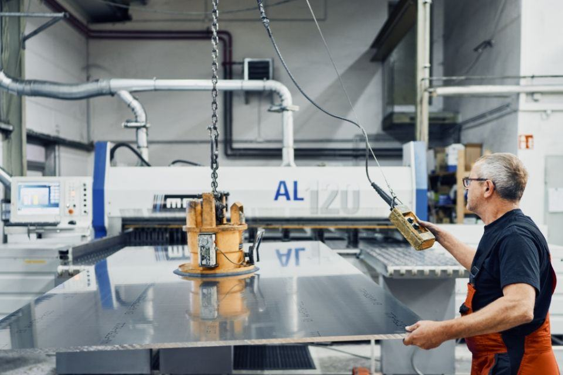
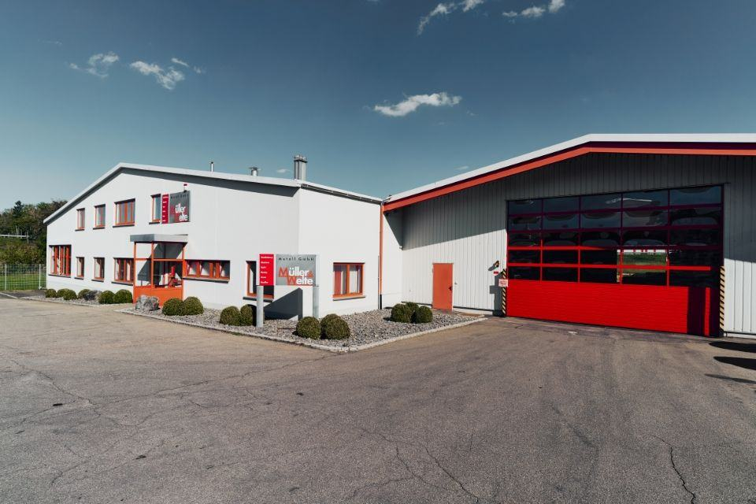
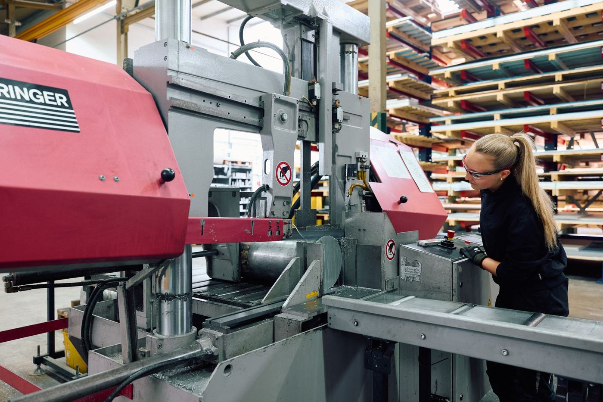

Faszination NE-Metalle
Rohstoffe sind unser Geschäft – dafür geben wir alles. Wir sind Partner und Dienstleister für Ihre persönlichen Kundenwünsche.
Individuelle Zuschnitte – Präzision und Qualität.
Wir bringen Platten und Stangen aus unserem Lager für Sie in die richtige Form und Größe.
Plattenzuschnitte für Aluminium, Messing und Kupfer gehören genauso zu unserem Handwerk wie Blech- und Stangenzuschnitte auf unseren leistungsfähigen Maschinen von Mayer und Behringer. Neben handelsüblichen Formaten beschaffen wir auch Sonderformate direkt vom Hersteller.

Blech- und Plattenzuschnitte
Bis zu einer Plattenstärke von 100 mm toleranzgenau, winklig und mit sauberen Schnittkanten. Größere Stärken kurzfristig lieferbar.
Stangenzuschnitte
Bis Ø 400 mm sind alle Stangen in unterschiedlichen Legierungen in Fixlängen ab 11 mm teilbar.
Flexible Bedarfsmengen
„Der Kunde ist König – und sein Bedarf ist unser Auftrag.“ Auch Abschnitte und Reststücke kurzfristig, zum aktuellen Tagespreis.
Schnell gebraucht? Einfach abholen.
Bei Müller & Welte können Sie zu den üblichen Geschäftszeiten alle Materialien direkt in Tuningen abholen. Ein Anruf genügt und Ihre Ware wird noch am selben Tag bereitgestellt. Bei Schneidaufträgen nennen wir Ihnen – just-in-time – die Bearbeitungszeit.
Warenannahme- & Abholzeiten
Wir wollen, dass Ihr Geschäft läuft.
Höchste Flexibilität und kurze Lieferzeiten. Im Durchschnitt 1.000–1.200 Tonnen Rohstoffe im Lager – nicht Vorrätiges liefern wir kurzfristig über unseren großen Lieferantenstamm.
Frei Haus ab 500 kg
Im Radius von 100 km mit eigenem Fuhrpark (2 Lkw). Darunter 30 € Frachtanteil je Lieferung.
Deutschland & Europa
Überregional mit erfahrenen Speditionen und Paketdiensten – sicher und fachgerecht.
2.500 m² Hochregallager
Über 3.500 Artikel jeder Größe, jedes Formats und jeder Legierung sofort verfügbar.
Termintreue
Ein professionell gemanagter Tourenplan und geschulte Fahrer sorgen für reibungslosen Ablauf.

Recycling und Umarbeitung.
Bei Zuschnitt-Arbeiten anfallende Rückstände und Späne sammeln wir und führen sie als Recyclingrohstoffe in den Kreislauf zurück. Ihre Messing-Späne schreiben wir Ihnen auf Ihrem persönlichen Umarbeitungskonto gut.
- Klein-Container (0,5 m³) für Späne und Abfälle kostenfrei – Anlieferung und Abholung ohne Frachtkosten
- Abschließbare Groß-Container (5–8 m³) auf Wunsch
- Verpackungsmaterial wird bei uns wiederverwendet
- Recyclingquote bei NE-Metallen in Deutschland: 90 % – Tendenz steigend
Fragen oder Feedback?
Sie erreichen uns telefonisch oder per E-Mail. Ihre Meinung ist uns wichtig – wir freuen uns über Ihre Anregungen.

Material gesucht oder Zuschnitt gewünscht?
Wir beraten persönlich – Anruf oder Mail genügen, oft ist die Ware noch am selben Tag bereit.